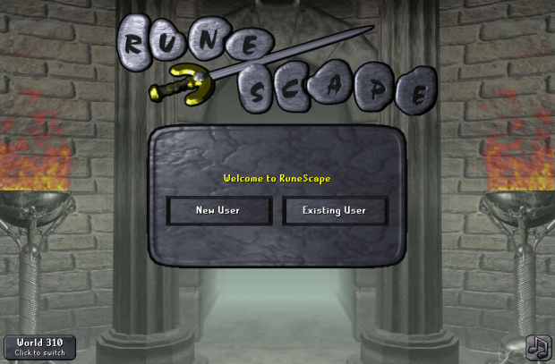

WELCOME TO RUNESCAPE 101
Runescape is MMORPG that was popular in the 2000s. It is an adventure style of game where you can do all sorts of things such as fishing, cooking, collecting items, killing monsters, exploring dungeons and even killing other players to take their stuff. There is almost no limit to the amount of activities in the game.